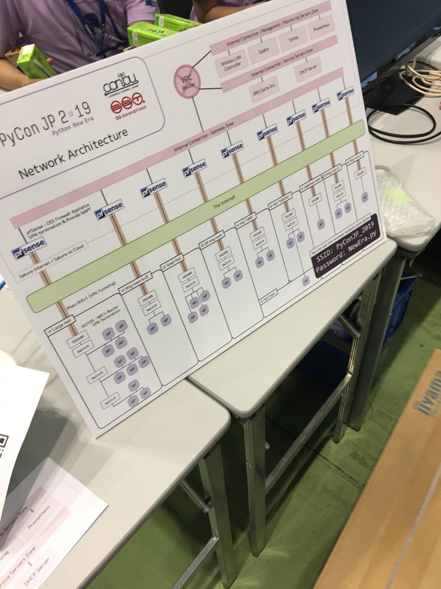
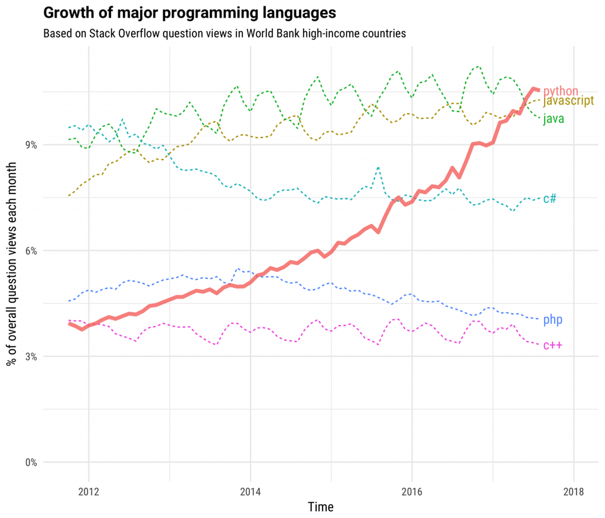
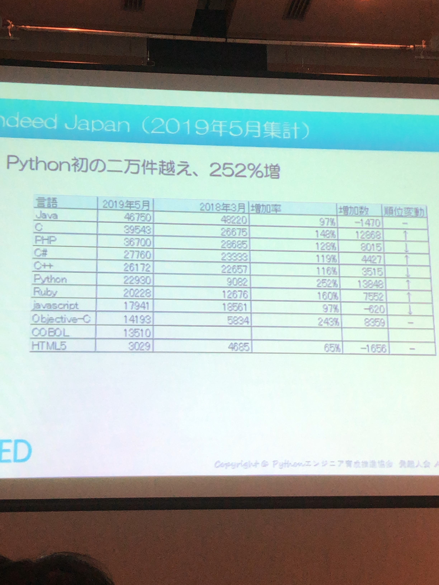
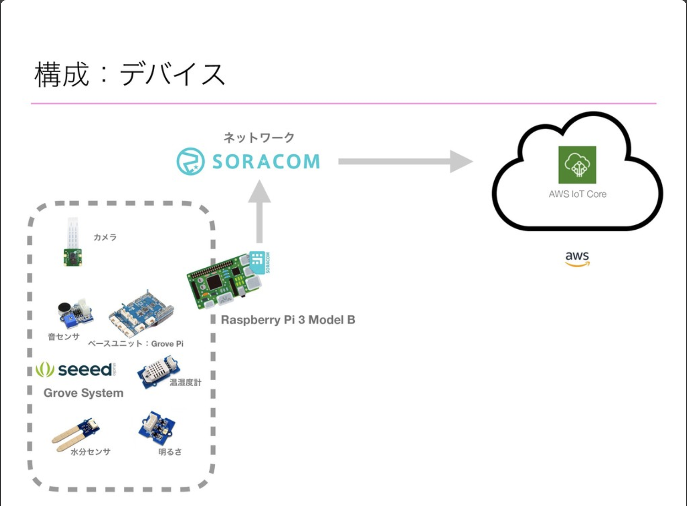
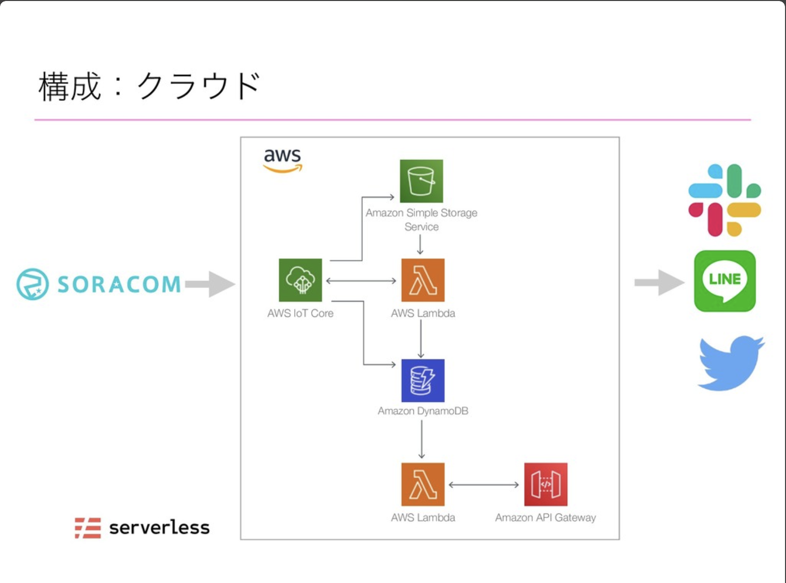
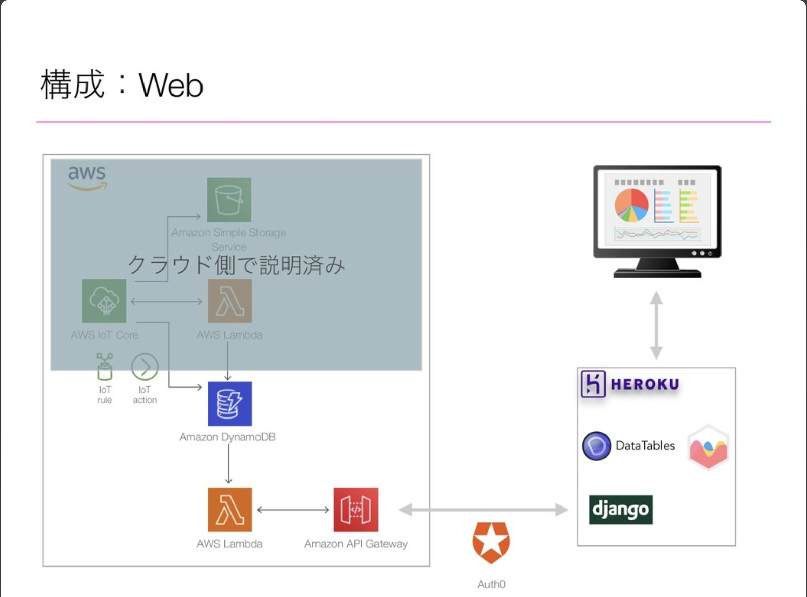
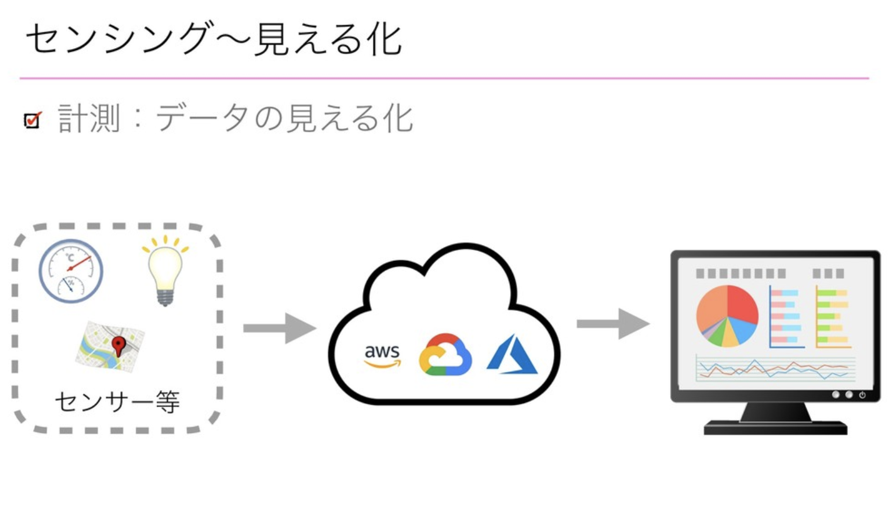
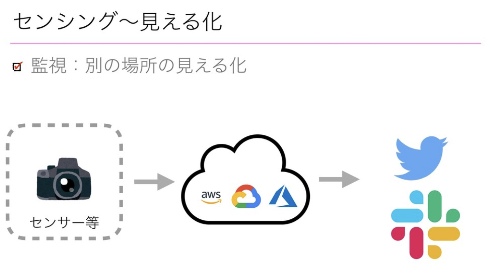
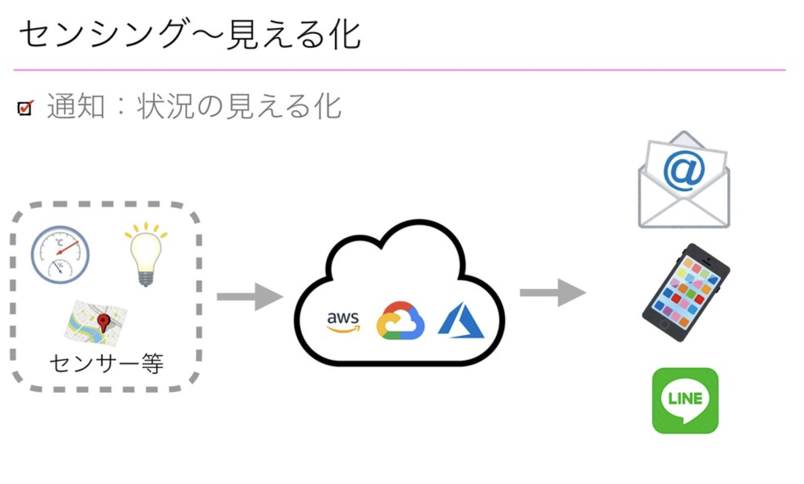

PyCon JP 2019 Day1
PyCon JP 2019 Day1
全体
ネットワークをコントロールしているところがあって、Wi-Fiもかなり快適。

スケジュール
- 09:45 - 10:00 オープニング (大展示ホール1F)
- 10:10 - 11:10 キーノート (大展示ホール1F)
- 11:25 - 12:10 Pythonと便利ガジェット、サービス、ツールを使ってセンシング〜見える化してみよう (小展示ホール2F)
- 12:10 - 13:40 ランチ & LT
- 13:40 - 14:25 Djangoで実践ドメイン駆動設計による実装 (D会議室6F)
- 14:40 - 15:10 Pie Meets Py ― PythonでAndroidアプリをつくろう (コンベンションホール鶯4F)
- 15:10 - 16:00 Coffee Break
- 16:00 - 16:15 Python ウェブアプリケーションのためのプロファイラの実装 (A+B会議室1F)
- 16:30 - 16:45 ListはIteratorですか？ (D会議室6F)
- 17:00 - 17:20 Lightning Talks (大展示ホール1F)
- 17:20 - 17:30 Photo Session1 (大展示ホール1F)
- 17:30 - 18:00 Same Day LT & Day1 Closing (大展示ホール1F)
- 18:00 - パーティ
内容
キーノート
Pythonがなぜ流行っているのか
- 初心者でも学びやすい
Hello world するプログラムだけでも Java と比べて、かなりシンプルになる。
- 需要
Python開発者の給与はほか言語と比べて高い。
プログラムについて質問するサイトでの質問数を見てもPythonは、かなり伸びているので、成長していると言える。

- コミュニティ
多くのエバンジェリストによって、Pythonのコミュニティが開催されている。
さらにPyConは、42ヶ国で開催されている。
Pythonの求人数

Pythonの求人は、かなり増加傾向。
Pythonと便利ガジェット、サービス、ツールを使ってセンシング〜見える化してみよう
IoTシステム構成



センシングとは
センサー（感知器）などを使用してさまざまな情報を計測・数値化する技術。



Grove System
センサー関連のPythonライブラリ。IoTが手軽にできる。
LINE Notify
他のwebサービスと連携させ、そのwebサービス上でアクションが起きたら、
LINEのチャットに通知を飛ばすことができる。
Djangoで実践ドメイン駆動設計による実装
MVC設計の問題点
ビジネスロジックをどこに書くのか・・（Modelに書くかControllerに書くか）
DDD(ドメイン駆動設計)
-
ドメインの中核となる複雑さと機会に焦点を当てる
-
ドメイン専門家とソフトウェア専門家のコラボレーションでモデルを探求する
-
明示的にそれらのモデルを表現するソフトウェアを書く
-
境界付けられたコンテキストの中のユビキタス言語で話す
DIコンテナ
依存関係を増やさないために使用する。
Pie Meets Py ― PythonでAndroidアプリをつくろう
Transcript
Python -> Javascript に変換する AltJS
typescript で良さそう・・
Pyjnius
Python から Java のコードを触ることができる。
Python ウェブアプリケーションのためのプロファイラの実装
wsgi_lineprof
行毎のプロファイリングを行うことができる。
簡単に実装でき、ボトルネックを見つけるのも簡単なのが特徴。
CPythonの評価過程
以下の過程を経て、実行される。
-
コードを読み込む
-
ツリーをパース
-
ASTに変換
-
CFGに変換
-
バイトコードに変換
-
バイトコードを評価
プロファイラを作る
C のコードを書いて middleware で実装すると良い